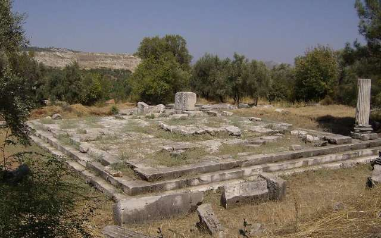

كاريا. تمتد كاريا من بودروم إلى داخل موغلا، وهي موطن الضريح (الموسوليوم)، إحدى عجائب الدنيا السبع. عاش الكاريون في منطقة تشمل موغلا اليوم وجزءًا من أيدين، وكانت لهم لغتهم الخاصة. وبلغت كاريا عصرها الذهبي في القرن الرابع قبل الميلاد في عهد الأسرة الهيكاتومنية التي حكمت المنطقة باسم الإمبراطورية الفارسية. وكانت عاصمتها الأولى ميلاسا (ميلاس)، حيث يُعتقد أن ضريح أوزونيوفا يعود إلى هيكاتومنوس. نقل الملك موسولوس العاصمة إلى هاليكارناسوس (بودروم). وعُدّ الضريح الفخم الذي بُني له بعد وفاته من عجائب الدنيا السبع، ومنه جاءت كلمة «موسوليوم». ويمكن رؤية أساساته وأجزائه اليوم في متحف الموسوليوم ببودروم. وكان المؤرخ هيرودوت أيضًا من هاليكارناسوس. ويكمل الصورة مقدس زيوس في لابراوندا، ومعبد هيكاته في لاغينا المتصل بستراتونيكيا بطريق مقدس، ومقابر كاونوس الصخرية، وأفروديسياس المدرجة في قائمة اليونسكو والشهيرة بمدرستها في النحت. ويروي متحف بودروم للآثار الغارقة تاريخ منطقة ارتبطت بالبحر.
تمتد كاريا من بودروم إلى داخل موغلا، وهي موطن الضريح (الموسوليوم)، إحدى عجائب الدنيا السبع.
عاش الكاريون في منطقة تشمل موغلا اليوم وجزءًا من أيدين، وكانت لهم لغتهم الخاصة. وبلغت كاريا عصرها الذهبي في القرن الرابع قبل الميلاد في عهد الأسرة الهيكاتومنية التي حكمت المنطقة باسم الإمبراطورية الفارسية. وكانت عاصمتها الأولى ميلاسا (ميلاس)، حيث يُعتقد أن ضريح أوزونيوفا يعود إلى هيكاتومنوس.
نقل الملك موسولوس العاصمة إلى هاليكارناسوس (بودروم). وعُدّ الضريح الفخم الذي بُني له بعد وفاته من عجائب الدنيا السبع، ومنه جاءت كلمة «موسوليوم». ويمكن رؤية أساساته وأجزائه اليوم في متحف الموسوليوم ببودروم. وكان المؤرخ هيرودوت أيضًا من هاليكارناسوس.
ويكمل الصورة مقدس زيوس في لابراوندا، ومعبد هيكاته في لاغينا المتصل بستراتونيكيا بطريق مقدس، ومقابر كاونوس الصخرية، وأفروديسياس المدرجة في قائمة اليونسكو والشهيرة بمدرستها في النحت. ويروي متحف بودروم للآثار الغارقة تاريخ منطقة ارتبطت بالبحر.
أين تشاهد هذا العصر
 متحف ضريح موسولوس التذكاري في بودرومموغلا
متحف ضريح موسولوس التذكاري في بودرومموغلا مجمع ضريح أوزونيوفا والمتحف (ميلاس)موغلا
مجمع ضريح أوزونيوفا والمتحف (ميلاس)موغلا موقع لابراوندا الأثريموغلامتحف الأعمال الحجرية في ميلاسموغلا
موقع لابراوندا الأثريموغلامتحف الأعمال الحجرية في ميلاسموغلا موقع كاونوس الأثريموغلا
موقع كاونوس الأثريموغلا موقع لاغينا الأثريموغلا
موقع لاغينا الأثريموغلا
موقع ستراتونيكيا الأثريموغلا متحف وموقع أفروديسياس الأثريآيدن
متحف وموقع أفروديسياس الأثريآيدن موقع يوروموس الأثري في ميلاسموغلا
موقع يوروموس الأثري في ميلاسموغلا موقع ياسوس الأثريموغلا
موقع ياسوس الأثريموغلا متحف بودروم لآثار ما تحت الماءموغلا
متحف بودروم لآثار ما تحت الماءموغلا🎓 اختبر معلوماتك
1. أي من عجائب الدنيا السبع كانت في كاريا؟
2. أي مدينة هي هاليكارناسوس اليوم؟
3. ما العاصمة الأولى للأسرة الهيكاتومنية؟
4. أي مؤرخ كان من هاليكارناسوس؟